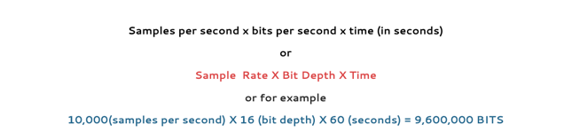

1.2.2 SOUND REPRESENTATION
2.2.2 | SOUND REPRESENTATION
WHAT IS SOUND ?
Sound is vibrations that oscillate in wave forms creating a change in pressure. Each wave is defined as a frequency, one oscillation can be seen in the diagram below.

Showing one full oscillation and a frequency of 18 Hertz
Frequency is measured in hertz. The diagram above shows one complete oscillation in 18 seconds, this means the wave have a frequency of 18 hertz. Sound travels as an analogue wave and we need to convert the analogue wave into digital representation for computer use. When converting the analogue wave into digital format there are two main factors we need to consider.
- How often do we want to take a sample of the original sound wave(times per second), this is known as sample rate.
- At what points on the amplitude do we want to take a sample, the amount of points on the amplitude that we are able to take a sample is called the bit depth or resolution.
If we were looking to convert the above sound wave into digital, we can only take samples were the wave meets a bit depth point and we can only take samples on a predefined time per second. If we were to take 2 samples per second then we would have taken 36 samples of the one oscillation illustrated. These samples can only be recorded on one of the bit depth levels. As illustrated with the sample taken at 15 seconds (marked X).
The above diagram has a bit depth of 3, because 3 bits have been used to represent the amplitude, this would mean a maximum of 8 or 2^3 points on the amplitude could be digitally represented.
Note: The values used are just for illustration purpose, in practice you could expect a sample rate of about 40,000 and a bit depth of 32.
When considering what sample rate and what bit depth to use there are a few factors to influence this decision.
- Nyquist's theorem - We need to sample a sound wave at double its highest frequency to be able to produce an accurate reproduction of the original.
- The scope of the human ear - The human ear can hear between 20Hz and 20,000Hz, much of a sound wave will be out of this range and not worth recording anyway. A band-limiting filter if often used to clip frequency out of the 20Hz - 20,000Hz range.
- The purpose of the recording and the medium through which it is used. - If the sound expected to be high quality and is to be played on a high quality sound system then a high sample rate and high bit depth is needed. If less quality is needed of it is to be streamed to platforms like youtube then a lower sample rate and bit depth would allow for faster data transfer.
According to Nyquist's theorem if a sound wave has a frequency of 10,000Hz we would need to sample at 20,000 samples per second to get an accurate reproduction of the original. Most CDs are recorded at 44,100 samples.
CALCULATING SOUND FILE SIZE

The result for the example above is shown in Bits but, it would be more appropriate to show the results in bytes, megabytes. To convert to a more appropriate representation, firstly you would divide by 8 to see how many bytes and then by 1024 for Kb and 1024 for Mb and so on..
9,600,000 / 8 = 1,200,000 Bytes
1,200,000 / 1024 = 1171.875 Kilo Bytes
1171.875 / 1024 = 1.14 Mega Bytes
1.4Mb is a much more appropriate term to use for the representation of the file size example above.
The above example presumes that the audio output is mono (the exact same sound is being sent to each speaker. Currently sound representation is at very least recorded in stereo, meaning that the left and right speaker work independently, if the sound is stored in stereo then the file size should be double. With larger home audio system a 5.1 representation could be expected, in this care each speaker has its independent sound track, Front Left, Front Center, Front Right, Rear Left, Rear Right and separate base speaker (subwoofer), in this case 6 channels may be needed so the file size could be 1.14Mb X 6. ( Check out the beach scene in 5.1 on the movie 'Saving Private Ryan' for a cool representation of 5.1 surround).
HOW DOES A MICROPHONE WORK

Internal working of a microphone
A microphone is a relative simple piece of technology using a transducer to convert movement to digital representation. It is like an inverted speaker, it uses a diaphragm to collect the sound, the diaphragm moves as waves of sound displace its position. It is delicately balanced to return to it neutral position after a sound wave has forced it to move. The diaphragm movement is connected a coil placed over a magnet this movement creates an electrical charge, as it movements alternates the electric current flowing alternates. This value can then be measured and converted into a digital representation of sound by measuring the frequency and depth of change.
What does a higher sample rate in digital audio recording achieve?
A) It increases the volume of the recorded audio.
B) It captures more details of the sound wave, resulting in higher quality.
C) It reduces the size of the audio file.
D) It reduces the amount of memory needed to store the audio.
TERMINOLOGY
Sound Representation | The process by which a computer stores and interprets sound data in binary form.
Digital Audio | Audio that has been converted from an analog sound wave into a digital format using binary numbers.
Sample Rate | The number of samples taken per second when converting analog sound into digital form, measured in hertz (Hz). Higher sample rates capture more detail.
Sample Resolution | Also known as bit depth, it refers to the number of bits used to represent each audio sample. Higher sample resolution allows for more precise representation of sound.
Bit Depth | The number of bits in each audio sample. Common bit depths include 8-bit, 16-bit, and 24-bit, with higher values allowing for greater dynamic range in sound.
Hertz (Hz) | The unit of frequency, representing cycles per second. In audio, sample rate is often measured in hertz, such as 44,100 Hz (44.1 kHz).
Analog to Digital Conversion (ADC) | The process of converting continuous analog sound waves into discrete digital samples that a computer can process.
Amplitude | The height of a sound wave, representing the volume or loudness. Higher amplitudes correspond to louder sounds and are represented by higher numerical values in digital audio.
Dynamic Range | The range between the softest and loudest parts of a sound, measured in decibels (dB). Higher bit depths in digital audio capture a greater dynamic range.
Decibel (dB) | A unit used to measure the intensity or loudness of sound. In digital audio, higher bit depths support a wider dynamic range in decibels.
Compression (Audio) | Techniques used to reduce the file size of digital audio. Lossy compression reduces file size by discarding some data, while lossless compression retains all original data.
Quantization | The process of mapping a large set of values (such as a range of sound amplitudes) to a smaller set, based on the sample resolution. Quantization can lead to slight inaccuracies known as quantization error.
Quantization Error | Small differences between the actual amplitude of the analog sound wave and its digital representation due to rounding in quantization.
Frequency | The rate at which a sound wave oscillates, measured in hertz (Hz). In digital audio, the sample rate must be at least twice the highest frequency to accurately reproduce the sound.
Nyquist Theorem | A principle stating that the sample rate must be at least twice the highest frequency present in the sound to avoid distortion and accurately reproduce it.
QUESTIONS
1: Fill in the blanks
A microphone captures sound in an analogue format, before the computer can represent this a .............................. is needed to convert the sound to a .................... format.
2: Describe what is meant by the term 'sampling'.
3: Explain why the sample rate effects the quality of the sound
4: Describe what is meant by the term 'bit depth'.
5: Describe what is meant by the term 'channel'.
6: Sound for youtube videos is often not represented at high quality, give 3 reasons why this might be the case for this scenario.
SOUND FILE SIZE
1: Calculate the file size for the following sound sample, give the size in MB
- Mono
- Sample rate: 42000
- Bit Depth: 16bit
- Time: 60 seconds
2: Calculate the file size for the following sound sample, give the size in MB
- Stereo
- Sample rate: 20000
- Bit Depth: 16bit
- Time: 120 seconds
3: What happens to the file size as more channels are represented?
4: Calculate the file size for the following sound sample, give the size in MB
- 4 channel
- Sample rate: 44100
- Bit Depth: 16
- Time: 180